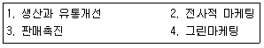
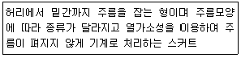

패션머천다이징산업기사 (2013-08-18 기출문제)
1과목: 패션마케팅
1. 보기의 패션마케팅 활동을 발전과정 순서대로 바르게 나열한 것은?

- 3→1→4→2
- 1→2→4→3
- 1→3→2→4
- 2→3→1→4
(정답률: 알수없음)

2. Engel, Blackwell 및 Miniard의 소비자 구매의사결사결정과정을 순서대로 바르게 나열한 것은?
- 정보탐색→문제인식→대안평가→구매→사용 및 평가
- 문제인식→정보탐색→대안평가→구매→사용 및 평가
- 정보탐색→대안평가→문제인식→구매→사용 및 평가
- 문제인식→대안평가→정보탐색→구매→사용 및 평가
(정답률: 알수없음)
3. 사회적 책임, 고객만족, 기업이윤이라는 세 가지 측면을 모두 고려하여 균형 잡힌 마케팅 의사결정을 하도록 요구하는 마케팅 관리 마케팅 관리 철학은?
- 기업중심적 마케팅 철학
- 고객중심적 마케팅 철학
- 제품중심적 마케팅 철학
- 사회중심적 마케팅 철학
(정답률: 알수없음)
4. 패션산업의 특성이 아닌 것은?
- 지식집약산업
- 감각산업
- 대기업독점산업
- 부가가치산업
(정답률: 알수없음)
5. 패션머천다이저의 역할 중 표적시장을 설정하고 디자인 콘셉트를 설정하는 업무단계는?
- 상품기획업무
- 생산지원업무
- 물류업무
- 판매촉진지원업무
(정답률: 알수없음)
6. 가격 구성요소의 설명 중 옳은 것은?
- 이익은 가격에서 제조원가를 제한 값이다.
- 제조원가는 인건비를 제외한 원자재의 재료비이다.
- 총원가는 고정비용과 변동비용을 포함한다.
- 전환원가와 제조간접비는 같은 의미이다.
(정답률: 알수없음)
7. 패션 머천다이징의 개념에 속하지 않는 것은?
- 적절한 판매(right sales)
- 적절한 장소(right place)
- 적절한 가격(right price)
- 적절한 시기(right time)
(정답률: 알수없음)
8. 대기업이 기성복 시장에 진출하면서 품질경쟁을 함에 따라 소비자들의 기성복에 대한 인식이 달라지기 시작한 시기는?
- 1960년대
- 1970년대
- 1980년대
- 1990년대
(정답률: 알수없음)
9. 표적시장을 설정하는 이유는?
- 누구의 어떤 욕구를 만족시킬 것인가를 명확히 한다.
- 어디에서 팔 것인가를 명확히 한다.
- 누구를 통해서 팔 것인가를 명확히 한다.
- 언제 팔 것인가를 명확히 한다.
(정답률: 알수없음)
10. 다음 중 대표적인 시장 세분화 기준에 해당되지 않는 것은?
- 인구통계적 기준
- 심리분석적 기준
- 사회적 기준
- 지리적 기준
(정답률: 알수없음)
11. 어떤 소비자가 수트(suit)를 사기 위해 여러 점포들을 방문하여 비교하고 선택했다면, 이 수트(suit)는 소비자의 구매습관에 따른 패션 제품의 분류 중 어디에 속하는가?
- 충동품
- 편의품
- 선매품
- 중점제품
(정답률: 알수없음)
12. 프랜차이즈 조직은 패션 유통경로 유형 중 어디에 해당하는가?
- 관리형 VMS
- 기업형 VMS
- 계약형 VMS
- 수평적 마케팅 시스템
(정답률: 알수없음)
13. 패션마케팅의 핵심개념에 관한 설명으로 틀린 것은?
- 패션제품은 서비스를 제외한 유형(有形)의 제품을 의미한다.
- 패션시장이란 패션제품, 서비스를 구매할 능력을 갖춘 실재적 혹은 잠재적 고객의 집합을 의미핟기도 한다.
- 교환이란 거래할 상대방에게 가치 있는 제품, 서비스를 제공하고 대가를 획득하는 행위를 말한다.
- 패션마케팅은 기본적인 욕구인 필요와 이를 만족시킬 수 있는 구체적인 수단인 욕구에서 출발한다.
(정답률: 알수없음)
14. 패션소비자의 활동, 관심, 의견과 관련된 내용으로 시장을 세분화할 때 그 기준이 되는 것은?
- 학력
- 라이프스타일
- 사회계층
- 직업
(정답률: 알수없음)
15. 소비자들이 구매 후 부조화를 감소시키는 방법이라고 할 수 없는 것은?
- 자신의 구매 행동에 정당성을 부여한다.
- 의사결정자체를 매우 중요한 것으로 여긴다.
- 자신의 선택을 반박하는 정보를 회피한다.
- 선택하지 않는 대안의 단점을 의식적으로 강화시킨다.
(정답률: 알수없음)
16. 마케팅요소 중 상품의 판매를 증대시키기 위한 촉진(promotion)의 요소에 포함되지 않는 것은?
- 잡지광고
- 패션쇼
- 판매원
- 브랜드
(정답률: 알수없음)
17. 소비자의 저관여 구매행동에 관한 설명으로 옳은 것은?
- 주로 비싸고 중요한 제품을 구매할 때 나타난다.
- 일반적으로 습관적 구매행동을 보인다.
- 정보획득의 매체를 적극 활용한다.
- 상표간의 차이가 비교적 큰 제품의 구매시 나타난다.
(정답률: 알수없음)
18. 어패럴 머천다이저의 역할이 아닌 것은?
- 정보분석
- 기술개발
- 상품기획
- 판매촉진업무
(정답률: 알수없음)
19. 마케팅 믹스(marketing mix)를 나타내는 4P's는?
- 제품계획, 가격구조, 판매촉진활동, 유통구조
- 상품기획, 제품생산, 상품진열, 판매촉진
- 패션기획, 패션상품, 패션홍보, 패션판매
- 패션기획, 패션상품, 패션프로모션, 패션유통
(정답률: 알수없음)
20. 가격인하에 대한 설명으로 틀린 것은?
- 경쟁기업보다 시장점유율을 높이기 위해 활용되기도 한다.
- 점차적으로 브랜드 로열티를 상승시켜 장기적인 관점에서 이익이 증대된다.
- 빈번한 가격인하는 소비자가 정상가격 제품의 구매를 꺼리는 부정적인 결과를 초래할 수 있다.
- 제품이 과잉 생산되었을 경우, 상품회전을 통한 재고감소 효과를 볼 수 있다.
(정답률: 알수없음)
2과목: 패션소재기획
21. 다음 중 케라틴(keratin)으로 구성된 단백질 섬유는?
- 면
- 양모
- 나일론
- 견
(정답률: 알수없음)
22. 방모 기모직물에 해당되지 않는 가공은?
- 모스(moss)가공
- 멜톤(melton)가공
- 벨루어(velour)가공
- 캐시미어(cashmere)가공
(정답률: 알수없음)
23. 의류의 판매시점과 생산시점을 가급적 가까이해서 위험 부담률을 줄이려는 시스템은?
- 배달 시스템(deliery system)
- 피드백 시스템(feed back system)
- QR 시스템(quick response system)
- POS(point of sales system)
(정답률: 알수없음)
24. 패딩, 퀼팅, 라미네, 코팅된 레더, 우레탄 백폼 등의 소재로 표현하기에 적합한 이미지는?
- 미니멀(minimal)
- 하이테크(Hit-tech)
- 아방가르드(avant-garde)
- 프리미티브(primitive)
(정답률: 알수없음)
25. 환경에 관한 기준을 만들어 친환경적인 방법에 의해 생산되는 모든 제품과 저에너지 사용 제품에 부여하는 품질 마크는?
- 에코 마크
- 품질 보증 마크
- 기능 마크
- 명품 마크
(정답률: 알수없음)
26. 폴리우레탄을 주성분으로 하고, 고무와 같이 신축성이 큰 섬유는?
- 다이넬(Dynel)
- 테토론(Tetoron)
- 스판덱스(Spandex)
- 나일론(Nylon)
(정답률: 알수없음)
27. 소재기획 중 소재전문회사의 패션정보 분석 과정 순서로 옳은 것은?
- 트렌드 정보자료 분석→견본 제작 및 소재 전시회→색상과 소재 정보수집→소재 수주→소재 생산→소재 납품
- 트렌드 정보자료 분석→색상과 소재 정보수집→견본 제작 및 소재 전시회→소재 수주→소재 생산→소재 납품
- 색상과 소재 정보수집→견본 제작 및 소재 전시회→트렌드 정보자료 분석→소재 수주→소재 생산→소재 납품
- 색상과 소재 정보수집→트렌드 정보자료 분석→견본 제작 및 소재 전시회→소재 수주→소재 생산→소재 납품
(정답률: 알수없음)
28. 실의 꼬임에 대한 설명으로 틀린 것은?
- 실의 형태와 강도를 유지하는 꼬임은 직선 상태에서 나선 상태로 변하게 된다.
- 실의 꼬임수는 단위 길이 당 굵은 실일수록 꼬임수가 많고, 가는 실일수록 적은 꼬임을 필요로 한다.
- 실의 꼬임이 너무 많으면 실의 비틀림이 커지므로 강력이 저하된다.
- 실의 꼬임수가 적은 약연사는 강도가 낮고 촉감이 부드럽다.
(정답률: 알수없음)
29. 생산된 의류 최종제품의 검사항목이 아닌 것은?
- 사이즈 검사
- 외관 검사
- 패턴 검사
- 품질 검사
(정답률: 알수없음)
30. 패션 트렌드와 감성 용어의 설명이 틀린 것은?
- 엘레강스-성숙한 여성의 아름다움을 표현하는 이미지
- 모던-전위성이 강하고 유행을 선취하는 패션 이미지
- 엑조틱-젊은 층을 중심으로 정열적이고 활동적인 이미지
- 로맨틱-꿈과 낭만을 쫒는 귀여운 소녀의 이미지
(정답률: 알수없음)
31. 다음 중 패션정보의 발표 시기가 틀린 것은?
- 국제유행색위원회의 국제유행색 결정-24개월 전
- 방적ㆍ합섬메이커의 자기 화사 트렌드 컬러 발표-12개월
- 켈렉션 및 제품전시회 개최-12개월 전
- I.W.S(국제양모사무국)와 I.I.C(국제면업진응회)의 유행색 결정-12개월에서 18개월 전
(정답률: 알수없음)
32. 견섬유의 용도로 적합하지 않은 것은?
- 란제리
- 넥타이
- 블라우스
- 스포츠웨어
(정답률: 알수없음)
33. 크리프트(crape) 직물의 특징이 아닌 것은?
- 표면이 까슬까슬 하다.
- 광택과 보온성이 있다.
- 구김이 덜 생긴다.
- 세탁 시 수축한다.
(정답률: 알수없음)
34. 기존의 제품들을 시각적으로 분류, 분석하고 새로운 제품의 위치를 구체화시키는데 사용되는 도구는?
- 소재 샘플
- 소재 맵
- 컬러 맵
- 이미지 맵
(정답률: 알수없음)
35. 새로운 의복 스타일을 소재에서 찾은 최초의 디자이너로 알려져 있으며, 저지(jersey) 원단을 의류소재에 처음 사용한 사람은?
- 가브리엘 샤넬(Gabrielle Chanel)
- 마들렌 비요네(Madeleine Vionnet)
- 크리스티앙 디오르(Christian Dior)
- 엘사 스키아파렐리(Elsa Schiapaerlli)
(정답률: 알수없음)
36. 소재의 표면 효과에 따른 재질감 중 비치는 느낌의 트랜스페어런트(transparent) 재질에 해당되지 않는 것은?
- 시어(sheer) 재질
- 슬릭(slicjk) 재질
- 글로시(glossy) 재질
- 레이시(lacy) 재질
(정답률: 알수없음)
37. 편성물의 특성이 아닌 것은?
- 양면편성물에는 전선(傳線)이 없다.
- 양면편성물에는 컬 업(curl-up)이 나타나지 않는다.
- , 편성물은 작물보다 내구성이 강하다.
- 편성물은 함기율 80% 이상이 된다.
(정답률: 알수없음)
38. 스웨이드형 인조가죽에 대한 설명 중 틀린 것은?
- 0.001~0.1 데니어 수준의 초극세섬유로 제작된다.
- 천연가죽과 섬유구조가 다르므로 통기성과 투습성이 없다.
- 품질이 균일하며 대량생산이 가능하다.
- 천연가죽에 비하여 가벼우므로 의류용으로 적합하다.
(정답률: 알수없음)
39. 방적사(spun yarn)와 비교한 필라멘트사(filament yarn)의 특징이 아닌 것은?
- 이음이나 꼬임이 없는 매끄러운 질감
- 광택이 있는 질감
- 부피감이 있는 질감
- 차가운 질감
(정답률: 알수없음)
40. 다음 중 직물의 삼원 조직에 해당되지 않는 것은?
- 리브직
- 평직
- 수자직
- 능직
(정답률: 알수없음)
3과목: 유통관리 및 광고
41. 상품운송조건에서 FPB Destination의 의미는?
- Destination까지 공급업자가 운송비를 지불하고, 제품의 소유권을 가진다.
- Destination까지 공급업자가 운송비를 지불하고, 소비업자가 제품의 소유권을 가진다.
- Destination까지 소매업자가 운송비를 지불하고, 공급업자가 제품의 소유권을 가진다.
- Destination까지 소매업자가 운송비를 지불하고, 제품의 소유권을 가진다.
(정답률: 알수없음)
42. 단순 판매만 하는 소매기능에서 더 나아가 직접 디자인을 기획, 생산하는 제조 기능까지 갖춘 것은?
- 사입형 패션전문점
- 제조 소매업
- 메이커 토탈 샵
- 멀티 브랜드 샵
(정답률: 알수없음)
43. 다음 중 패션유통정보시스템에 해당되지 않는 것은?
- EOS시스템
- EDI시스템
- POS시스템
- CAD시스템
(정답률: 알수없음)
44. 패션제조업자가 대리점을 통하여 소비자에게 판매하는 유통경로는?
- 제조업자→도매상→소매상→소비자
- 제조업자→도매상→소비자
- 제조업자→소비자
- 제조업자→소매상→소비자
(정답률: 알수없음)
45. 특정회사의 제품을 영화나 드라마 속에 소품으로 노출시켜, 브랜드나 이미지 등을 관객들에게 홍보하는 일종의 간접광고를 의미하는 것은?
- CF
- VMD
- PPL
- MD
(정답률: 알수없음)
46. 점포내 고객이 구매할 당시에 제공되는 표시물로서 브랜드, 가격, 소재, 규격, 사용법 등 상품에 대한 다양한 정보를 제공하여 구매에 영향을 미치는 것은?
- POS
- POP
- PDP
- MP
(정답률: 알수없음)
47. 판매장소로부터 멀리 떨어진 호텔로비, 전시홀, 터미널 등에 전시되어 잠재고객에게 상품의 호의성을 높이도록 하는 패션 디스플레이는?
- 릴레이티드 디스플레이
- 시리즈 디스플레이
- 리모트 디스플레이
- 프로모셔널 이벤트 디스플레이
(정답률: 알수없음)
48. 상품 구색에 대한 설명으로 틀린 것은?
- 상품 구색의 폭은 소비자에게 제공하는 품목 수이다.
- 상품 구색의 깊이는 특정상품의 종류 내에서 스타일, 사이즈, 색상 등의 수를 말한다.
- 소품종 다량구색은 좁고 깊은 상품구성을 의미한다.
- 백화점 또는 패션을 추구하는 고급 점포는 좁고 깊은 구성이 바람직하다.
(정답률: 알수없음)
49. 동선에 대한 설명으로 옳은 것은?
- 고객동선은 길수록 좋다.
- 판매원동선은 길이가 짧으면 판매원의 능률이 저하된다.
- 관리동선은 길게 계획되어야 한다.
- 관리동선은 판매와 직접적으로 관련된 사람들의 동선이다.
(정답률: 알수없음)
50. 한 가지 또는 한정된 상품군을 깊게 취급하면서 매우 저렴하게 판매하는 유통형태는?
- 백화점
- 양판점
- 팩토리 아울렛(factory outlet)
- 카테고리 킬러(category killer)
(정답률: 알수없음)
51. 구매주문형태에 대한 설명으로 틀린 것은?
- 정규주문(regular orders)은 바이어가 판매상에게 정규제품을 주문하는 것이다.
- 이월주문(back orders)은 기간 내 선적하지 못하여 미루어진 주문이다.
- 특별주문(special orders)은 불규칙한 제품의 수급이나 재고가 바닥났을 때 잠정적으로 활용한다.
- 선주문(advance orders)은 선적이 늦어질 수 있기 때문에 한 시즌 미리 이루어지는 주문이다.
(정답률: 알수없음)
52. 지상파 TV 방송광고의 유형별 설명으로 틀린 것은?
- 프로그램 광고-허용량은 프로그램 방송시간의 10/100 이내
- SB광고-프로그램과 프로그램 사이의 광고
- 자막광고-자막크기는 화면의 1/2이내
- 간접광고-상품을 방송프로그램 안에서 소품으로 활용하여 노출시키는 형태
(정답률: 알수없음)
53. 고객 수준에 따른 상품구성에 대한 설명으로 옳은 것은?
- Prestige-상품의 품질이 중요하다.
- Better-상품의 양이 중요하다.
- Volume-상품의 이미지가 중요하다.
- Budget-상품의 희소가치가 중요하다.
(정답률: 알수없음)
54. VMD 전개의 요소 중 VP(Visual Presentation)에 대한 설명으로 옳은 것은?
- 점포나 브랜드의 콘셉트, 테마 표현이 중요하다.
- 고객의 동선이나 시선을 고려하여 주요 상품을 제시한다.
- 실제 판매가 이루어지는 곳이다.
- 소비자들이 감성보다는 이성에 호소하는 역할을 한다.
(정답률: 알수없음)
55. 소구 대상이 어느 정도 명확하고 감정적, 분위기적인 소구가 가능하고, 기사와 연동이 가능하므로 패션제품의 광고 매체로 가장 적합한 것은?
- TV
- 라디오
- 신문
- 잡지
(정답률: 알수없음)
56. 홍보 수단 중 프레스 키트(press kits)에 대한 설명에 해당하는 것은?
- 뉴스나 토크쇼에서 디자이너가 인터뷰하는 것
- 매체의 관심을 얻기 위해 신상품이나 행사에 대한 정보를 한 두 페이지로 요약한 자료
- 기업체에서 이벤트나 행사 등을 홍보하기 위해 제작하는 여러 유형의 홍보자료가 담긴 자료집
- 디자이너나 패션업체에 대한 자서전적 소개
(정답률: 알수없음)
57. 다음 중 점포소매업이 아닌 것은?
- 전문점
- 백화점
- 편의점
- 카탈로그
(정답률: 알수없음)
58. 리테일 머천다이징의 영업 전략에 관한 설명으로 옳은 것은?
- 도입기에는 많은 물량을 전개한다.
- 도입기에는 다양한 상품을 전개한다.
- 실매기에는 코디네이트 테마를 제안한다.
- 실매기에는 패션트렌드를 제안한다.
(정답률: 알수없음)
59. 제조업체가 일정지역 내에서 자사의 제품을 취급할 점포수를 의도적으로 제한하여, 독점적 제품판매권을 부여함으로써 제품의 이미지나 명성을 높이기 위한 경고 커버리지 전략은?
- 전속적 유통(exclusive distribution)
- 집약적 유통(intensive distribution)
- 선택적 유통(selective distribution)
- 직접 유통(direct distribution)
(정답률: 알수없음)
60. 파사드(facade display) 디스플레이에 대한 설명으로 옳은 것은?
- 고객 스스로 선택할 수 있는 상품테이블을 주로 이용하여 디스플레이 하는 방법이다.
- 점포의 분위기 연출이나 장식적인 목적을 위해 상점 외부나 전면에 전시하는 외관디스플레이 이다.
- 판매소구점을 제공하기 위해 점포내부공간을 매력적으로 연출하는 것이다.
- 단기적인 판매보다는 점포의 독창성을 주기 위해 윈도우에 연출하는 디스플레이 이다.
(정답률: 알수없음)
4과목: 패션디자인론 및 의복구성학
61. 다음 설명에 해당되는 스커트는?

- 스트레이트 스커트(straight skirt)
- 플레어 스커트(flared skirt)
- 플리츠 스커트(pleats skirt)
- 고어드 스커트(gored skirt)
(정답률: 알수없음)
62. 의복구성에서 심지를 사용하는 가장 큰 목적은?
- 옷감의 재질을 좋게 하기 위해서
- 봉제하는데 편리하게 하기 위해서
- 세탁의 용이함을 위해서
- 입체감(외형)을 살리기 위해서
(정답률: 알수없음)
63. 각 부위의 기본 시접 분량으로 가장 옳은 것은?
- 칼라-2cm
- 목둘레-2cm
- 어깨와 옆선-2cm
- 소매단-2cm
(정답률: 알수없음)
64. 패션이 전파되어 가는 과정의 단계 순서로 옳은 것은?
- 패션→모드→스타일
- 모드→스타일→패션
- 모드→패션→스타일
- 스타일→패션→모드
(정답률: 알수없음)
65. 기성복의 생산 과정 순서가 옳은 것은?
- 마킹→그레이딩→재단→봉제
- 마킹→재단→그레이딩→봉제
- 그레이딩→재단→마킹→봉제
- 그레이딩→마킹→재단→봉제
(정답률: 알수없음)
66. 옷감 두 장을 안쪽이 마주 보도록 겹쳐 놓고 얇게 박은 후 뒤집어 다시 받는 바느질 방법으로 봉제의 견고성을 위해 사용하는 시접처리 방법은?
- 통솔
- 가름솔
- 뉜솔
- 쌈솔
(정답률: 알수없음)
67. 다음 중 패션디자인의 가장 기본적인 요소에 해당하는 것은?
- 색채
- 실루엣
- 디테일
- 트리밍
(정답률: 알수없음)
68. 소매 원형에서 길과 연결하여 구성된 소매는?
- 레그 오브 머튼 슬리브
- 케이프 슬리브
- 카울 슬리브
- 래글런 슬리브
(정답률: 알수없음)
69. 색의 대비 중 동시 대비에 해당되지 않는 것은?
- 색상 대비
- 명도 대비
- 보색 대비
- 계시 대비
(정답률: 알수없음)
70. 강한 명시성이 요구되는 스포츠 웨어나 단조로운 의상에 변화를 주어 돋보이게 하는데 효과적인 배색방법은?
- 세퍼레이션 배색
- 악센트 배색
- 그라데이션 배색
- 콤플렉스 배색
(정답률: 알수없음)
71. 다음 중 아우어글래스 실루엣(hourglass silhouette)이 아닌 것은?
- 프린세스(princess) 실루엣
- 피티드(fitted) 실루엣
- 미나렛(minaret) 실루엣
- 쉬드(sheath) 실루엣
(정답률: 알수없음)
72. 봉사가 가져야 할 특성이 아닌 것은?
- 내구성
- 내마모성
- 형태안정성
- 염색성
(정답률: 알수없음)
73. 천 두장을 실고 꿰매어가면서 서로 연결시키는 장식봉은?
- 패거팅(fagoting)
- 파이핑(poping)
- 프린징(fringing)
- 베이닝(veining)
(정답률: 알수없음)
74. 톤(tone)과 이미지의 연결이 가장 옳은 것은?
- pale-수수함, 쓸쓸한, 차분한
- dull-부드러운, 희미한, 온화한
- vivid-강한, 생생한, 화려한
- light-애매한, 둔한, 깊은
(정답률: 알수없음)
75. 모티브의 배열방식 중 경사의 상하가 위사의 좌우와 달라 180°로 옳겨야 같아 보이는 무늬는?
- 4 방향 배열무늬
- 2 방향 배열무늬
- 한 방향 배열무늬
- 전 방향 배열무늬
(정답률: 알수없음)
76. 길 원형의 활용에 대한 설명 중 틀린 것은?
- 다트의 위치는 가슴점을 중심으로 디자인상 사기가 원하는 곳에 위치를 정한다.
- 원형 기본 다트의 앞은 언더 암 다트(under aem dart)이고, 뒤는 암 홀 다트(arm hole dart)이다.
- 다트의 위치를 이동시켜 새로운 패턴을 만드는 것을 다트머니퓨레이션(dart manipulation)이라고 한다.
- 숄더 다트(shoulder dart)에서 앞길은 숄더 다트의 선을 기본 다트의 위치까지 자르고 기본 다트를 접어준다.
(정답률: 알수없음)
77. 앞판 전체 모심지의 역할이 아닌 것은?
- 앞몸판 전체의 균형유지
- 가슴부위 성형성 유지
- 견갑골 형태유지
- 볼륨감 유지
(정답률: 알수없음)
78. 다음 중 복식디자인의 색채계획에서 가장 먼저 이루어져야 하는 것은?
- 주색채의 결정
- 조화의 결정
- 배색의 결정
- 색체의 양 결정
(정답률: 알수없음)
79. 길 원형에서 다트가 전개시켜 주는 디자인이 아닌 것은?
- 개더(gather)
- 턱(tuck)
- 솔기선(seam line)
- 카울(cowl)
(정답률: 알수없음)
80. 장식봉의 종류에 대한 설명 중 틀린 것은?
- 턱킹(tucking)-작은 주름을 일정 간격으로 박아서 장식하는 것이다.
- 셔링(shirring)-장식적인 잔주름을 잡는데 쓰이며, 잔주름이 고정된 형으로 여러 줄을 나타낸다.
- 루싱(ruching)-네크라인 등의 장식에 사용된다.
- 스모킹(smocking)-불규칙적인 주름을 잡은 다음 그 위로 수를 놓는 것이다.
(정답률: 알수없음)
5과목: 패션정보분석
81. 라이프스타일 개념이 소비자 행동에 도입된 시기는?
- 1950년대
- 1960년대
- 1970년대
- 1980년대
(정답률: 알수없음)
82. 시장 분석 시 장기 예측에 대한 설명이 아닌 것은?
- 의류산업에 나타나는 변화를 연구한다.
- 소비자의 소비형태와 사업적인 경제경향을 연구한다.
- 사회적, 정신적, 정치적 요인과 전 세계적인 유행의 추세를 포함한다.
- 디자이너, 머천다이저, 판매사원이 모여 회사의 전략 계획을 토의한다.
(정답률: 알수없음)
83. 마케팅 의사결정 시스템(MDSS)에 해당되지 않는 것은?
- 구조화된 문제를 대상
- 환경변화에 대한 적응력 정보
- 사용잗의 상호작용을 통한 정보 제공
- ‘What lf' 분석을 통한 의사결정의 향상
(정답률: 알수없음)
84. 사물의 내용이나 형편에 관한 소식이나 자료를 의미하는 용어는?
- 사실
- 정보
- 지식
- 기획
(정답률: 알수없음)
85. 소비자 구매의사결정과정에서 구매 후 단계에 해당하는 것은?
- 대안평가
- 사용 및 평가
- 정보 탐색
- 문제인식
(정답률: 알수없음)
86. 스와치 샘플(swatch sample)을 통해 얻을 수 있는 패션정보는?
- 인기 스타일
- 인기 소재
- 유행 트리밍
- 유행 디테일
(정답률: 알수없음)
87. 색채정보의 조사 및 분석법 중 상반되는 의미의 형용어를 짝지어, 이를 척도로서 측정하여, 색채에 대한 심리적인 측면을 다면적으로 다루는 방법은?
- 순위법
- SD법
- 연상법
- 언어연상법
(정답률: 알수없음)
88. 다음 패션마케팅 조사 유형 중 마케팅 조사의 초기단계에 주로 실시하며, 조사문제를 명확히 설정하고, 조사에 대한 전반적인 아이디어를 얻을 수 있는 것은?
- 기술 조사(descriptive research)
- 탐색 조사(exploratory research)
- 소비자 조사(consumer research)
- 인과 조사(causal research)
(정답률: 알수없음)
89. 패션 시장조사의 내용이 아닌 것은?
- 시장의 규모와 시장구조 조사
- 시장의 입지조건 조사
- 상품선호도 조사
- 인기상품 조사
(정답률: 알수없음)
90. 패션정보의 시계열 추이로 볼 때 가장 먼저 예측되어지는 것은?
- 컬러
- 소재
- 스타일
- 디테일
(정답률: 알수없음)
91. 현대인의 생활공간(life stage) 중 통근, 통학, 비즈니스 등을 포함하는 것은?
- 소셜 라이프(social life)
- 홈 라이프(home life)
- 시티 라이프(city life)
- 레저 라이프(leisure life)
(정답률: 알수없음)
92. 설문조사방법 중 신속한 자료수집이 가능한 것이 최대의 장점이며, 비교적 대표성이 높고 지역적으로 폭넓은 표본추출이 가능한 것은?
- 대인 조사
- 인터넷 조사
- 우편 조사
- 전화 조사
(정답률: 알수없음)
93. 소비자조사에 필요한 요소가 아닌 것은?
- 구매동기
- 광고효과
- 라이프스타일
- 시장규모
(정답률: 알수없음)
94. 패션 상품기획을 위한 정보 중 외부환경정보가 아닌 것은?
- 판매 실정 정보
- 의류 산업 정보
- 소비자 정보
- 패션 트랜드 정보
(정답률: 알수없음)
95. 패션 관련 정보 중 판매실적 정보가 아닌 것은?
- 영업환경 분석
- 표적시장의 확인
- 각 브랜드별 고객의 라이프스타일 분석
- 머천다이징 콘셉트 및 디자인 콘셉트 확인
(정답률: 알수없음)
96. 국제유행색협회(Intercolor)에 대한 설명 중 옳은 것은?
- 1973년에 설립되어 스위스에 본부를 두고 있다.
- 1년에 한번 회의가 개최된다.
- 우리나라는 2015년 가입예정이다.
- 2년 후의 유행색을 예측, 결정한다.
(정답률: 알수없음)
97. POS(Point of sales)시스템에 대한 설명으로 틀린 것은?
- 주로 바코드를 통해 자료가 인식된다.
- 점포의 매출, 반품, 재고 등의 즉각적인 파악이 가능하다.
- 제조시점정보 관리시스템을 말한다.
- 소매점 단말기에 입력된 정보가 전산망을 통해 본사로 통보된다.
(정답률: 알수없음)
98. 패션트렌드 분석요소 중 머천다이징 부서의 스페셜리스트들에게 패션이미지에 접근하는 범위의 설정과 이미지의 표현방법을 제시해 주는 역할로 가장 옳은 것은?
- 패션 아이템
- 패션테마
- 실루엣과 디테일
- 라이프스타일
(정답률: 알수없음)
99. 패션기업의 외적 환경 중 기술적 환경과 관계가 없는 것은?
- CAD
- PB
- QRS
- EDI
(정답률: 알수없음)
100. 소비자 조사에서 라이프스타일 분석 방법에 대한 설명 중 틀린 것은?
- AIO조사에는 인구통계적 특성이 포함되는 경우가 흔히 있다.
- AIO조사는 소비자들의 행위(activities), 관심(interest), 조직(organization)에 관한 조사이다.
- 소비자들의 욕구, 가치, 신념을 분석하여 라이프스타일을 규명할 수 있다.
- 상품관련 라이프스타일은 특정 상품의 구매와 소비에 관련된 것을 말한다.
(정답률: 알수없음)
2. 제품 디자인, 브랜드 이미지, 패키지 등을 개발하고, 이를 통해 브랜드 인식을 높인다.
3. 광고, 이벤트, SNS 등을 활용하여 제품을 홍보하고, 소비자들의 관심을 끌어낸다.
4. 판매 채널을 확보하고, 제품을 유통시켜 소비자들에게 구매 기회를 제공한다.
따라서, 1→3→2→4가 정답이다. 시장조사와 경쟁분석을 통해 마케팅 전략을 수립한 후, 제품 디자인과 브랜드 이미지를 개발하여 브랜드 인식을 높인다. 그리고 광고와 이벤트를 통해 제품을 홍보하고, 소비자들의 관심을 끌어낸다. 마지막으로 판매 채널을 확보하고, 제품을 유통시켜 소비자들에게 구매 기회를 제공한다.